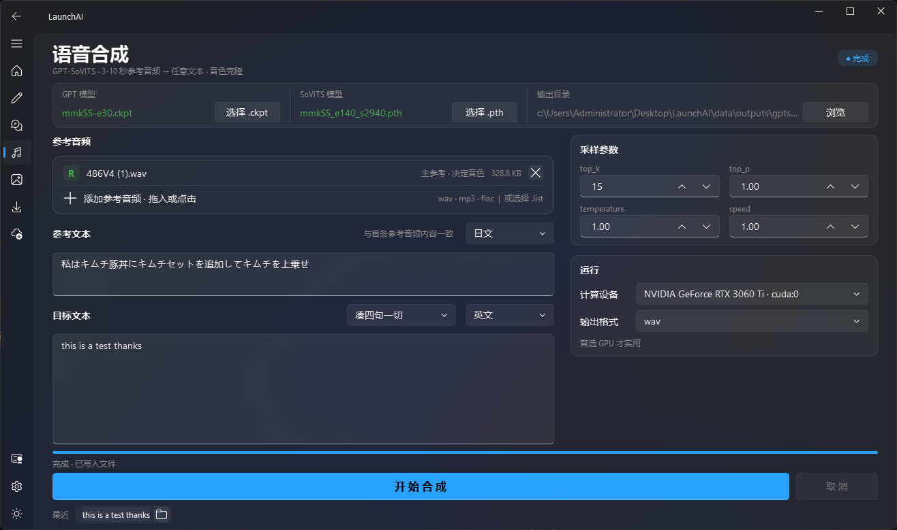
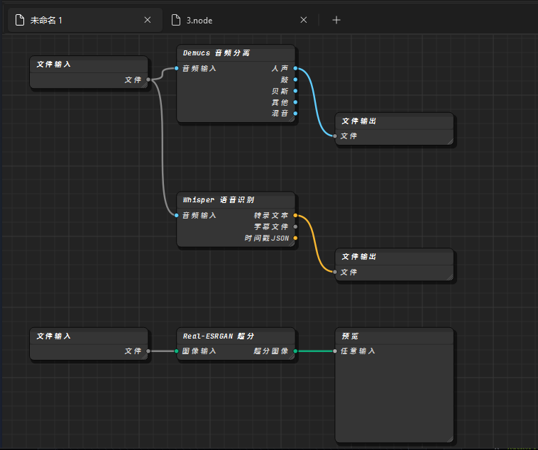
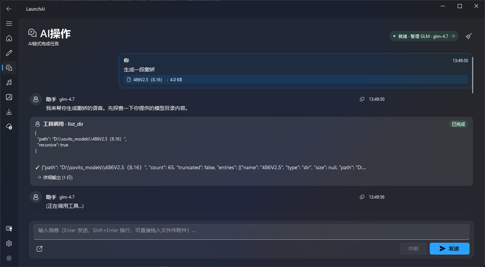

打开子页面,像用桌面软件那样
侧栏点工具,右边选文件、调参数、按一个按钮就跑 波形、进度条、日志共享同一屏,没有第二个窗口需要盯

images/mode-ui.png // 待补:任一子页面(例如 Demucs / Whisper)// 08 个开源 AI 模型 · 一个窗口
上面这段每次装新模型都跑一遍LaunchAI 替你跑,只是它认得镜像、认得补丁、也不需要你在场
按顺序看是叙事,按需跳读也无碍
左边的目录抽屉随时打开,回顶按钮跟着滚动出现
用社区的原版命名不改成"音频分离神器"、也不叫"AI 加速引擎"
目标用户已经知道这些词的意思了
每一个都能被下面四种方式调用:动手、连线、说话、或走 HTTP
背后是同一份 worker,前面开了四条口子
动手、连线、说话、或者让程序打过来 —— 挑一个你今天顺手的
侧栏点工具,右边选文件、调参数、按一个按钮就跑 波形、进度条、日志共享同一屏,没有第二个窗口需要盯

images/mode-ui.png // 待补:任一子页面(例如 Demucs / Whisper)类Blender的操作逻辑 —— 你把工具当节点、连线、填参数,LaunchAI 按拓扑序跑完

images/mode-node.png // 待补:节点编辑器画布(建议连一条 File → Demucs → Whisper)接一个 LLM 端点,你只需描述目标——"把这首歌的人声抠出来,再转成字幕" LLM 把这句话拆成节点图、填好参数、按拓扑序跑完 —— 返回给你文件

images/mode-llm.png // 待补:自然语言 → 生成的节点图 → 执行过程设置页打开HTTP SERVER 开放本地工具到外网
$ curl -X POST http://127.0.0.1:8000/v1/invoke \
-H "Authorization: Bearer $LAUNCHAI_KEY" \
-H "Content-Type: application/json" \
-d '{
"model": "demucs",
"input": "/path/to/song.mp3",
"parameters": { "two_stems": "vocals" },
"stream": true
}'
# ← SSE 事件流
event: progress
data: {"pct": 24, "status": "loading htdemucs"}
event: progress
data: {"pct": 87, "status": "separating"}
event: result
data: {"path": "data/outputs/demucs/vocals.wav"}上游社区留下的坑,LaunchAI 里已经埋好了
你不用知道它们的存在——但既然你在看这个页面,你可能想知道
site-packages/basicsr/data/degradations.py:8
- from torchvision.transforms.functional_tensor import rgb_to_grayscale
+ from torchvision.transforms.functional import rgb_to_grayscalebasicsr 引用了 torchvision 早期版本里、后来被删掉的路径装 Real-ESRGAN 前先把这一行替换回来,不然
ImportError
demucs/requirements_minimal.txt
grep -v '^torch' requirements_minimal.txt \
> requirements_filtered.txt
# 已经在上一步装了 torch+cu121,再装一次会拉回 CPU 版
echo "soundfile" >> requirements_filtered.txt # Windows onlydemucs 的 requirements 里写死 torch,pip 会用无 CUDA 的 CPU 轮子覆盖已装好的
torch+cu121过滤掉再装
workers/pip_worker.py::install_from_git
pip install tb-nightly # 先
pip install basicsr # 再
apply_patch(basicsr/degradations.py) # 顺手修上面的坑
pip install facexlib gfpgan # 然后
python setup.py develop # 最后顺序反了会一路报错basicsr 前得先有 tb-nightly,gfpgan 前得先修
basicsr,develop 前得先装完所有 runtime
这类补丁散布在 workers/pip_worker.py 里,总共十几处
每一处都是被"能不能装上"这一条约束反复打磨出来的
Github 开源项目 请勿用于盈利性用途 归属个人所有
本启动器免费提供,如您通过其他渠道付费获得本软件,请立即退款并投诉相应商家
本启动器唯一发布地点位于 Github @Heartestrella 请认准官方来源